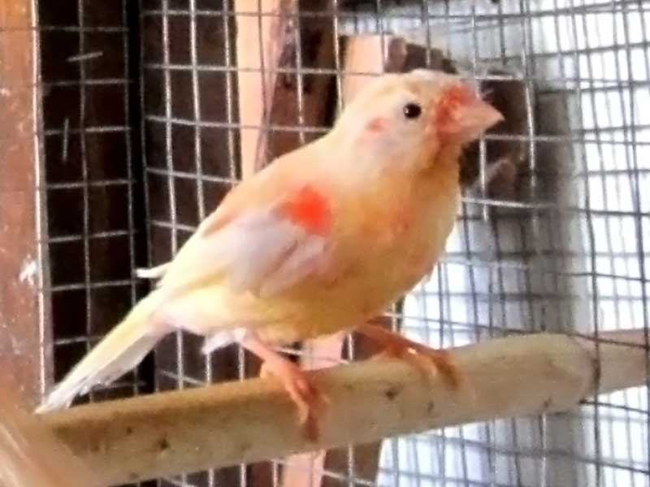

<!DOCTYPE html>
<html>
	<head>
		<meta charset="UTF-8" />
		<title>Канарейки</title>
		<link href="styles.css" rel="stylesheet" type="text/css" media="all" />
	</head>
</html>

<body>

	<div id='external_box'>

		<div id='internal_box'>
			<div id='header'>
				<ul id="menu">
					<li class="navigation"><a href='#' id='chosen_li'>Главная</a></li>
					<li class="navigation"><a href='uhod1.html'>Уход</a></li>
					<li class="navigation"><a href='photogallery.html'>Галерея</a></li>
					<li class="navigation"><a href='#'>Контакты</a></li>
				</ul>
			</div>
			<div class='clear'>
			</div>
			<div id='content'>
				
				<div class="block">
				
				<p>Наш сайт посвящён <span>КАНАРЕЙКАМ</span> — одним из самых музыкальных и неприхотливых домашних птиц. Уже не одно столетие канарейки радуют своих владельцев приятным мелодичным пением, разнообразием расцветок и необычностью форм. И неудивительно, что во всем мире канарейки пользуются большой и, несомненно, совершенно заслуженной популярностью, которая постоянно растет.
				</div>
					<div class='clear'>
					</div>
					
				
			
			</div>
		</div>

		<div id="bottom_picture">
		</div>

	</div>
	<div id='foreground'>

	</div>
</body>
